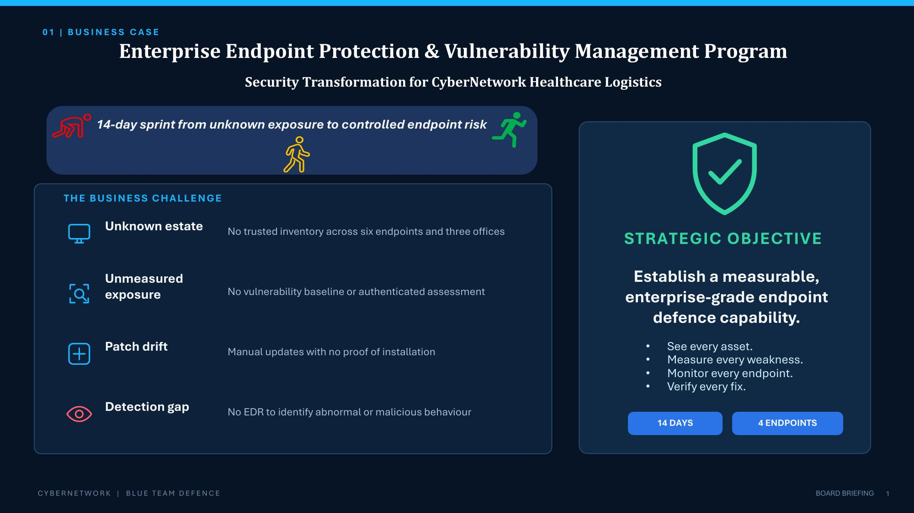
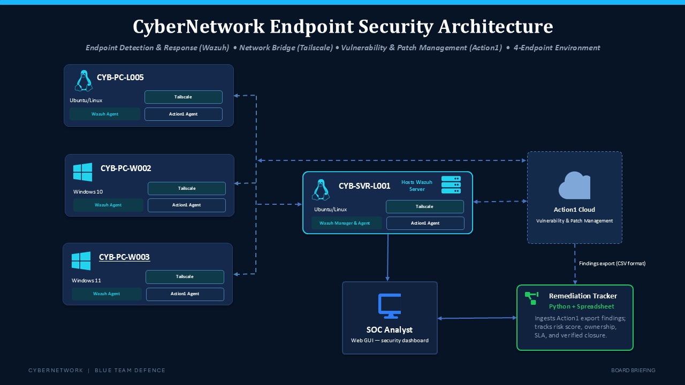
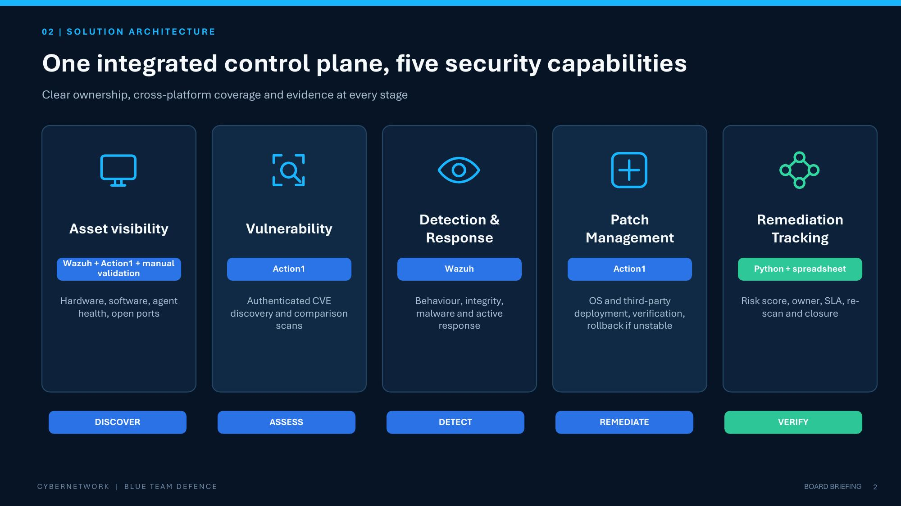
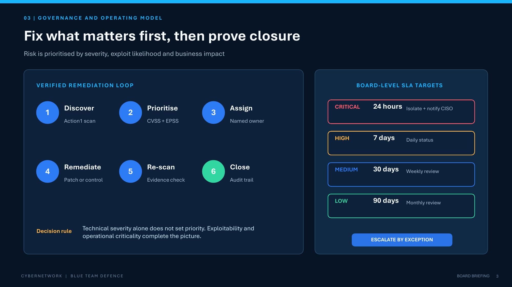
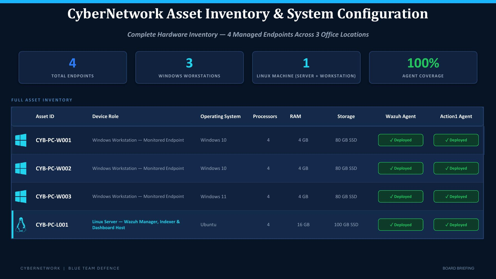
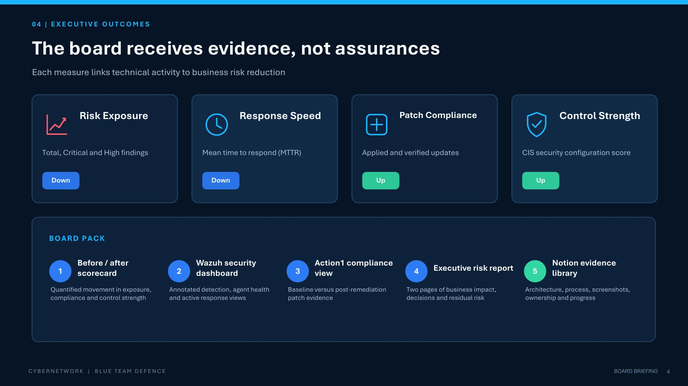
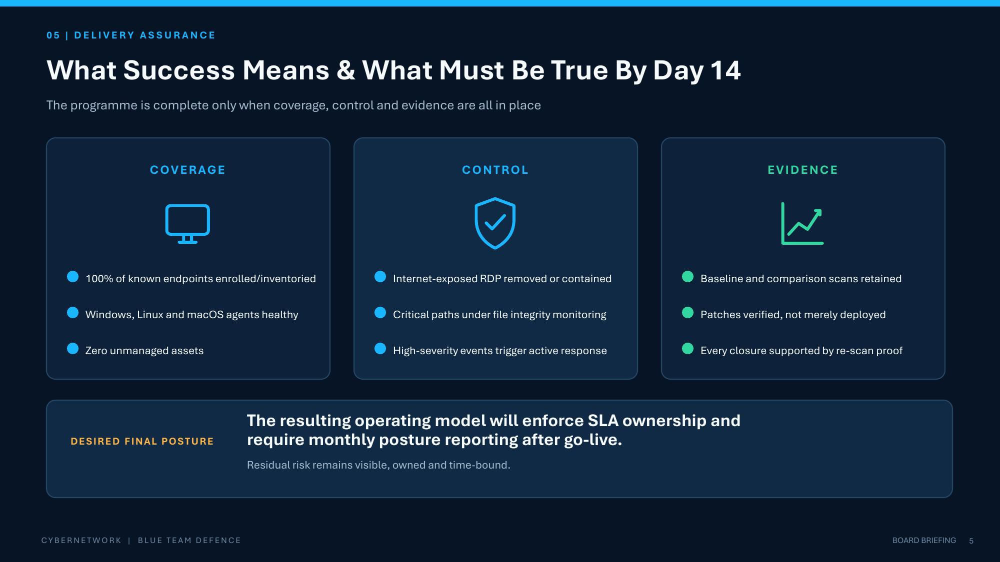

CyberNetwork Healthcare Logistics · Expadox Limited internship, cohort 3
CyberNetwork is a healthcare logistics company running Windows workstations, Linux servers, and a small number of macOS laptops across three offices. Going in, there was no trusted asset inventory, no vulnerability baseline, patches applied manually and inconsistently, and no endpoint detection in place. A competitor in the same sector had just been hit with ransomware through an unpatched machine with an exposed RDP port. The team had 14 days to build a full endpoint protection and vulnerability management program before a board meeting, with evidence at every stage rather than assurances.

This was a team build. My specific contributions:

Five capabilities running on one integrated control plane, with clear tool ownership at each stage: discover, assess, detect, remediate, verify.

Every finding moves through the same six-step loop: discover, prioritise, assign, remediate, re-scan, close. Priority is set by CVSS severity, EPSS exploit likelihood, and business impact together, not severity alone, and each severity tier carries its own response SLA.

| Severity | Target | Action |
|---|---|---|
| Critical | 24 hours | Isolate and notify CISO |
| High | 7 days | Daily status |
| Medium | 30 days | Weekly review |
| Low | 90 days | Monthly review |
The monitored environment covers four endpoints across three offices: three Windows workstations and one Linux server hosting the Wazuh manager, indexer, and dashboard, all at 100% agent coverage across Wazuh and Action1.

By day 14, risk exposure and mean time to respond had both moved down, while patch compliance and CIS security configuration score both moved up, tracked through a before/after scorecard rather than asserted. The board pack delivered alongside the program:

Success was defined against three criteria the program had to satisfy by day 14: full coverage of known endpoints, verified controls in place, and retained evidence at every stage rather than a one-time claim.

The complete project report, including architecture notes, process detail, and additional screenshots from every team member, is documented on Notion.